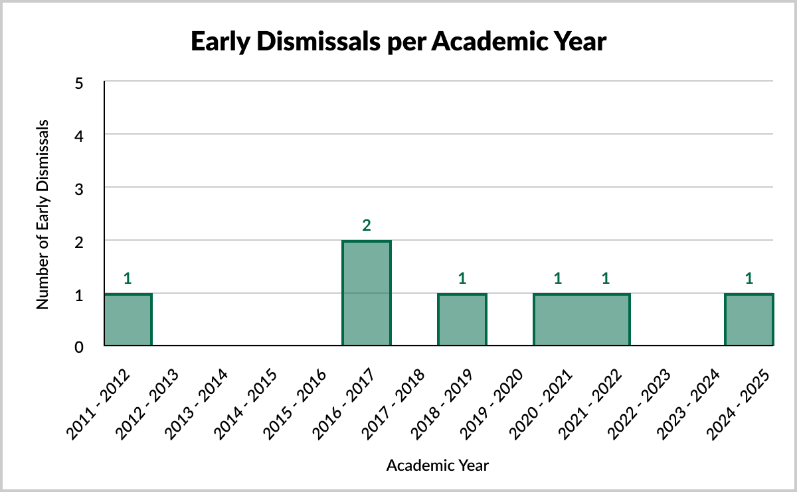

Summary Data
Colchester County
Historical Summary Table
The following table has been generated using data collected between September 1, 2011 and June 30, 2024.
| Academic Year | Total Cancellations | Total Early Dismissals | Total Delayed Arrivals | Total Bussing Restrictions | Total Days Affected |
| 2011-2012 | 4 | 1 | 0 | 1 | 6 |
| 2012-2013 | 5 | 0 | 0 | 1 | 6 |
| 2013-2014 | 8 | 0 | 0 | 1 | 9 |
| 2014-2015 | 5 | 0 | 0 | 4 | 9 |
| 2015-2016 | 6 | 0 | 0 | 0 | 6 |
| 2016-2017 | 11 | 2 | 0 | 1 | 14 |
| 2017-2018 | 6 | 0 | 0 | 4 | 10 |
| 2018-2019 | 7 | 1 | 0 | 3 | 11 |
| 2019-2020 | 8 | 0 | 0 | 3 | 11 |
| 2020-2021 | 3 | 1 | 0 | 3 | 7 |
| 2021-2022 | 7 | 1 | 0 | 5 | 13 |
| 2022-2023 | 14 | 0 | 2 | 1 | 17 |
| 2023-2024 | 6 | 0 | 2 | 7 | 15 |
| Average | 7 | 0 | 2 | 3 | 10 |
| Median | 6 | 0 | 2 | 3 | 10 |
| Mode | 6 | 0 | 2 | 1 | 6 |
Storm Days by Academic Year
The following graphs have been generated using the Historical Summary Table.
Disclaimer
This website may not be 100% accurate, and was created for educational purposes only. While efforts are/have been made to ensure accuracy, the data was collected manually using search filters.
As this dataset is intended to represent the entirety of the County of Colchester, any cancellations made for an individual school (e.g. power outages) have been omitted.
Raw Data
Raw data is collected using Google Sheets. Due to the limitations of embedded content from Google Workspace, only historical snapshots will be posted to this website. The link to all of the live raw data can be found here. Typically data is added from the Inclement Weather Notifications within 1-3 days.